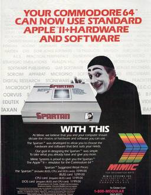
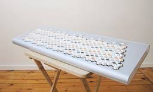
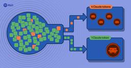

Hacker News: Front Page
フィード

There's No Limit to How Bad Code Can Get
Hacker News: Front Page
Article URL: https://zachkehs.com/blog/theres_no_limit_to_how_bad_code_can_get/Comments URL: https://news.ycombinator.com/item?id=49576704Points: 19# Comments: 5
1時間前
Meet the Ig Nobel Prize Winners 1
1
Hacker News: Front Page
Article URL: https://arstechnica.com/science/2026/09/meet-the-2026-ig-nobel-prize-winners/Comments URL: https://news.ycombinator.com/item?id=49576611Points: 15# Comments: 2
1時間前
The "$60 Gaming PC" – AMD BC-250 (2025)
Hacker News: Front Page
Article URL: https://devquasar.com/hardware/the-60-gaming-pc-amd-bc-250/Comments URL: https://news.ycombinator.com/item?id=49576386Points: 53# Comments: 16
1時間前
.gitignore Everything by Default 1
Hacker News: Front Page
Article URL: https://packagemain.tech/p/gitignore-everything-by-defaultComments URL: https://news.ycombinator.com/item?id=49576258Points: 10# Comments: 10
2時間前
Pentagon rescinds new testosterone screening policy without explanation
Hacker News: Front Page
Article URL: https://arstechnica.com/health/2026/09/pentagon-releases-then-quickly-removes-testosterone-screening-policy/Comments URL: https://news.ycombinator.com/item?id=49576196Points: 79# Comments: 62
2時間前
Global warming will exceed 1.5-degree limit, UN says
Hacker News: Front Page
Article URL: https://www.pbs.org/newshour/science/global-warming-will-exceed-1-5-degree-limit-un-says-in-report-that-maps-path-back-below-danger-zoneComments URL: https://news.ycombinator.com/item?id=49576124Points: 71# Comments: 31
2時間前

A bizarre Commodore 64 peripheral, a mime, and some pretty bad ads
Hacker News: Front Page
Article URL: https://buttondown.com/suchbadtechads/archive/spartan-and-the-mime/Comments URL: https://news.ycombinator.com/item?id=49575859Points: 7# Comments: 1
3時間前

Terpstra Keyboard 2
Hacker News: Front Page
Article URL: http://terpstrakeyboard.com/Comments URL: https://news.ycombinator.com/item?id=49575150Points: 34# Comments: 12
5時間前

Claude's new system prompt doesn't want to reproduce song lyrics
Hacker News: Front Page
Article URL: https://simonwillison.net/2026/Sep/2/claudes-new-system-prompt/Comments URL: https://news.ycombinator.com/item?id=49575143Points: 15# Comments: 4
5時間前
Netherlands pulls gold out of the US for fears of 'geopolitical unrest'
Hacker News: Front Page
Article URL: https://www.abc.net.au/news/2026-09-04/why-the-netherlands-moved-its-gold-from-us-and-canada/107111990Comments URL: https://news.ycombinator.com/item?id=49575034Points: 185# Comments: 116
5時間前
AI handles incidents, engineers lose touch with their systems 1
Hacker News: Front Page
Article URL: https://www.sylvainkalache.com/blog/ai-handles-incidents-engineers-lose-touch-with-their-systemsComments URL: https://news.ycombinator.com/item?id=49574167Points: 253# Comments: 215
7時間前
Git hosting that never leaves Europe
Hacker News: Front Page
Article URL: https://pushin.euComments URL: https://news.ycombinator.com/item?id=49573680Points: 158# Comments: 90
9時間前
Nitter has more working instances than before the takedowns
Hacker News: Front Page
Article URL: https://codeberg.org/mv12star/shitter/wiki/InstancesComments URL: https://news.ycombinator.com/item?id=49571634Points: 390# Comments: 156
15時間前

Portal by Spotify cut my Claude Code token usage by 90% 4
Hacker News: Front Page
Article URL: https://engineering.atspotify.com/2026/9/portal-by-spotify-cut-my-claude-code-token-usage-by-90Comments URL: https://news.ycombinator.com/item?id=49571465Points: 184# Comments: 96
15時間前
Can guitar frets perform multiplication? 1
Hacker News: Front Page
Article URL: https://www.charlespetzold.com/blog/2026/09/Can-Guitar-Frets-Perform-Multiplication.htmlComments URL: https://news.ycombinator.com/item?id=49571047Points: 105# Comments: 29
16時間前
Actively exploited sandbox RCE in all Chromium versions
Hacker News: Front Page
Article URL: https://nvd.nist.gov/vuln/detail/cve-2026-85046Comments URL: https://news.ycombinator.com/item?id=49570669Points: 621# Comments: 348
17時間前
GPT-6 Astra on OpenRouter
Hacker News: Front Page
Article URL: https://openrouter.ai/openai/gpt-6-astraComments URL: https://news.ycombinator.com/item?id=49570545Points: 263# Comments: 177
17時間前
Statichost.eu – European static site hosting 1
Hacker News: Front Page
Article URL: https://www.statichost.eu/Comments URL: https://news.ycombinator.com/item?id=49569896Points: 363# Comments: 166
19時間前
Can AI design circuit boards yet? 1
Hacker News: Front Page
Article URL: https://eebench.org/blog/can-ai-design-circuit-boards-yet/Comments URL: https://news.ycombinator.com/item?id=49569366Points: 300# Comments: 179
19時間前
Fermat's Last Theorem in Lean 4
Hacker News: Front Page
Article URL: https://github.com/anthropics/fermats-last-theoremComments URL: https://news.ycombinator.com/item?id=49568697Points: 130# Comments: 26
20時間前